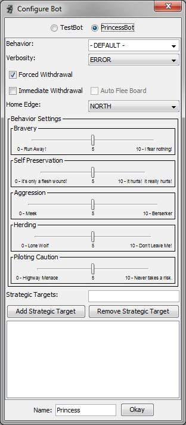

The Princess Bot was written in an attempt to create an AI that would process quicker than our previous bot, TestBot, even if it were slightly dimmer:
|  |
The Princess Bot has a number of settings to play with. BehaviorThere are 4 behaviors pre-configured with Princess:
You can also enter a name to save your own configurations for later games or for use with the replacePlayer command. Forced WithdrawalUsed to make the Princess follow the Forced Withdrawal rules outlined in Total Warfare. Immediate WithdrawalUsed to make Princess send her units to her home edge from the start of the game, regardless of damage level. This can be handy for Chase and Breakthrough scenarios. Auto Flee Board(Only available when Immediate Withdrawal is in effect.) If this is checked, Princess will issue the Flee command as soon as her units reach her home edge, regardless of damage level. Home EdgeDefines which edge Princess will attempt to flee across when Forced Withdrawal is in effect. AggressionThis determines how much Princess wants to close with her enemies. Lower settings will cause her to try to keep her distance more, while higher settings will have her get right up in her enemies' faces. BraveryThis determines how much return fire Princess is willing to risk in order to do damage to the enemy. HerdingThe higher this value, the more Princess will try to keep her units together. Piloting CautionThis determines how willing Princess is to fail a piloting roll and fall on her face when attempting various maneuvers. Higher settings means that Princess will risk fewer piloting rolls. Note, this also affects how willing she is to use MASC or try to move through or on buildings. Self PreservationThis determines how quickly Princess will flee once Forced Withdrawal takes effect. At lower levels, she will attempt more of a fighting withdrawal, while at higher levels she should run straight for her home edge. Strategic TargetsThis allows you to provide Princess with a list of hex coordinates or unit ids to move to and attack. If a building exists in a target hex, then she will attempt to destroy that building. If a unit with the given id is on the enemy team, she will give that target a higher priority. |
Chat commands can only be given to an allied Princess player (on the same team).
| Command | Syntax | Description |
|---|---|---|
| Flee | princessName: flee : edge# |
Causes princess-controlled units to start fleeing the board, regardless of damage level or Forced Withdrawal setting.
Edge # is a number from 0 to 4:
|
| Behavior | princessName: behavior : behaviorName |
Change's princess's behavior to the named behavior (case-sensitive). |
| Caution | princessName: caution : <+/-> |
Modifies princess's Piloting Caution setting. Each '+' increases it by 1 and each '-' decreases it by one. |
| Avoid | princessName: avoid : <+/-> |
Modifies princess's Self Preservation setting. Each '+' increases it by 1 and each '-' decreases it by one. |
| Aggression | princessName: aggression : <+/-> |
Modifies princess's Aggression setting. Each '+' increases it by 1 and each '-' decreases it by one. |
| Herding | princessName: herd : <+/-> |
Modifies princess's Herding setting. Each '+' increases it by 1 and each '-' decreases it by one. |
| Bravery | princessName: brave : <+/-> |
Modifies princess's Bravery setting. Each '+' increases it by 1 and each '-' decreases it by one. |
| Target | princessName: target : hexNumber |
Adds the specified hex to princess's list of Strategic Targets. |
| Prioritize | princessName: prioritize : unitId |
Adds the specified unit to princess's Priority Targets list. |
| Show Behavior | princessName: showBehavior |
Princess will state the name of her current behavior. |
| List Commands | princessName: listCommands |
Displays a list of available chat commands for Princess. New commands are constantly added to control the bot. |
If a player has become disconnected (the word "(Ghost)" appears next to their name, you can replace that player with a bot. There are two methods for replacing a player:
Use the Edit Bots command under the Game menu. This will bring up a version of the Bot Config Dialog along with a list of players that can be replaced.
/replacePlayer -b:Princess <-c:ConfigName> <-p:>PlayerName
Princess will replace the named player.
<-c> Specifies a saved configuration to be used by Princess (case-sensitive). If left out DEFAULT will be used.<-p> Specifies the player to be replaced. The "-p:" is only required with the "-c:" or "-v:" parameters are also used.The following are the optional rules that should be safe to use when playing against Princess. Anything not on this list will either cause Princess to behave in nonsensical ways (always Sprinting or Leaping) or can cause crashes/lockups (mek/vehicle lance movement). So, it is not recommended you use any rules not on this list when using Princess.
If there is an optional rule you would like Princess to support, file a Feature Request at our GitHub issue tracker: https://github.com/MegaMek/megamek/issues
Any will work, but Princess isn't really aware of them. This means that she'll use the same strategy no matter the VC.